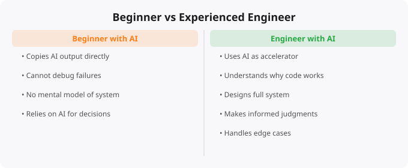

The availability of AI coding tools has led to an interesting situation: beginners can now produce code that looks professional faster than ever before. AI assistants will generate a React component, a REST API, a database schema, or a Docker configuration that would have taken a junior developer hours or days to produce from scratch. This raises an uncomfortable question: what is the real difference between a beginner using AI and an experienced engineer using AI?
The answer reveals something important about what software engineering actually is — and what skills remain valuable even as AI handles more of the mechanical coding work.
When an AI generates code and a beginner accepts it without deeply understanding it, that beginner has borrowed competence rather than developed it. The code might work for the specific case that was described. But when requirements change, when something breaks, when the code needs to be optimized, or when it needs to be integrated with other systems in ways that were not anticipated, the beginner who does not understand the code cannot make those changes confidently. The experienced engineer who would have written the same code from scratch can adapt, debug, and extend it — because they understand the principles behind it, not just the specific syntax.
This gap — between having code that works and understanding why it works — is the most important and least visible consequence of over-reliance on AI generation without learning. Beginners who use AI heavily without investing in understanding the output are building a fragile foundation that may not support more complex work later.
Nothing reveals the gap between beginners and experienced engineers more clearly than debugging. When something does not work, the experienced engineer has a systematic process: forming hypotheses about what might be wrong, designing tests that will confirm or eliminate those hypotheses, interpreting the results, and narrowing down the problem space efficiently. They have pattern recognition built from encountering similar problems many times. They know what to look for in logs, how to use debugging tools effectively, and how to reason about system state. The beginner confronted with a bug has none of this pattern recognition. They may try random things, paste the error into AI, and accept the first suggestion — which may work, or may appear to work while creating a different problem. The inability to diagnose and fix problems systematically is one of the most significant limiters on beginner productivity, and it is not something that more AI access fixes.
Experienced engineers think about systems. When given a new requirement, they think about how it interacts with existing components, what the data model should look like, how the solution should handle scale, what the failure modes are, and how future requirements might change the design. This thinking happens before code is written, and it determines whether the resulting code is maintainable, performant, and reliable in production. Beginners typically think at the function or file level — how to write the code that does the specific thing requested — without thinking about the larger system context. This difference in scope is why experienced engineers can build systems that remain manageable as they grow, while codebases built without architectural thinking become unmaintainable tangles of dependencies and implicit assumptions.
Professional software development rarely starts with perfectly specified requirements. Real requirements are ambiguous, incomplete, and sometimes internally contradictory. The skill of requirements analysis — asking the right clarifying questions, identifying what is really needed versus what was explicitly stated, anticipating edge cases that the person making the request did not consider — is something that develops through experience and domain knowledge. When a beginner implements the literal description of a requirement, they often miss the cases that the description did not explicitly cover: what happens when the input is empty? When it is unexpectedly large? When the network call fails? When the user does something unexpected? Experienced engineers have learned (often through painful production incidents) to think about these cases proactively. This habit of defensive thinking — imagining how things can go wrong and handling those cases explicitly — is one of the most important engineering skills, and it is not something AI generates automatically.
Engineering in professional environments is a team sport. The ability to communicate technical decisions and trade-offs clearly, to review other engineers' code constructively and usefully, to break down complex tasks for collaboration, to estimate effort accurately, and to raise concerns and risks before they become problems — these skills are as important as any technical capability for career progression and professional effectiveness. These are developed through working on real teams on real problems over time. AI can assist with many communication tasks but cannot provide the interpersonal experience and professional judgment that comes from years of working in collaborative technical environments.
The right strategy is not to avoid AI tools. They are genuinely powerful and will be part of professional software development for the foreseeable future. The right strategy is to use AI tools as accelerators for learning rather than substitutes for it. When AI generates code, understand it — line by line if necessary. When AI suggests a solution, ask why that approach and not alternatives. When something breaks, try to diagnose it yourself before asking AI for the fix. Build things that are complex enough to require actual engineering judgment. Work on real projects with real users where the consequences of failure matter. The gap between a beginner and an engineer cannot be filled by better AI tools. It is filled by accumulated experience, deliberate learning, and the development of judgment that only comes from doing the work over time.
← Back to BlogThe word "engineer" in software engineering implies something specific: the ability to systematically design, build, and maintain complex systems that work reliably under real-world conditions. This is qualitatively different from being able to write code that works on your laptop. The gap between these two capabilities is precisely where most beginners stall.
Problem: "The app crashes sometimes"
Beginner approach:
- Reproduce the crash locally
- Fix that specific case
- Deploy and hope it does not crash again
- Add a try/catch to hide errors
Engineer approach:
- Add comprehensive logging and error tracking (Sentry)
- Analyse error patterns: when, who, what sequence
- Identify root cause, not just symptoms
- Fix the underlying design flaw
- Add monitoring to catch regressions
- Add test cases for the fixed scenario
- Document the issue and resolution for the teamAI coding assistants are genuinely powerful. GitHub Copilot, Cursor, and Claude can generate correct code for well-understood patterns, explain error messages, suggest refactoring, and write tests. These capabilities reduce the friction of the implementation layer of engineering significantly.
What AI does not make easier: understanding requirements (talking to stakeholders and extracting what they actually need), system architecture (deciding how components should be divided and how they interact), debugging complex distributed systems (following a failure across 5 services), performance optimisation (understanding why something is slow and fixing it), and leading technical teams.
The engineering skills that remain high-value in an AI world are precisely the ones that require human judgment, context, and accountability -- the skills that come from experience rather than pattern matching.
The beginner-to-engineer transition typically takes 2-4 years of working on real production systems. You can accelerate by: working on open source projects, taking on responsibility for production systems early in your career, doing system design practice, reading engineering blogs from companies like Uber, Netflix, and Cloudflare that publish deeply technical content.
Yes. Many successful engineers are self-taught or from bootcamps. A CS degree provides a strong foundation in algorithms, data structures, and computer science theory. Self-taught engineers need to proactively fill those gaps. The most important credential is a portfolio of real projects and the ability to pass technical interviews -- both are achievable without a degree.
Senior engineers are distinguished by: scope (they work on larger, more complex systems), judgment (they make architectural decisions that prove correct over time), ownership (they are accountable for systems end-to-end), mentorship (they make others better), and communication (they can explain technical decisions to non-technical stakeholders clearly).